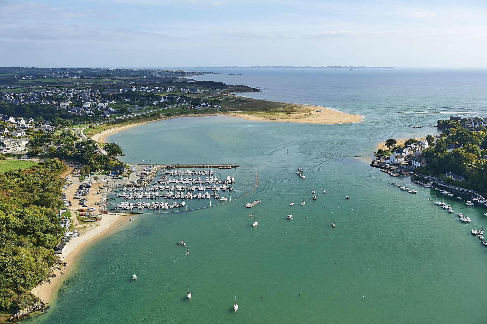
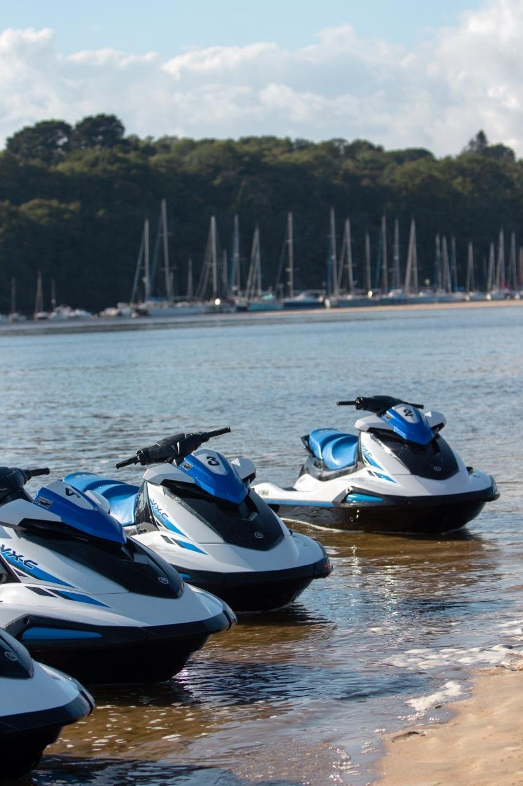

Les n°1 du Motonautisme en Bretagne
Jet ski sans permis, flyboard, wakeboard, ski nautique & bouée tractée — encadrés par des moniteurs diplômés d'État, entre l'estuaire de la Laïta et l'île de Groix.
Des activités ludiques et variées
La base nautique FUN56 est basée à Guidel-Plages (56520), commune située à proximité de Lorient dans le Morbihan. Nos locaux se trouvent sur le terre-plein du port de plaisance de Guidel-Plages, d'où s'effectue le départ de toutes nos activités.
Le port se trouve à l'embouchure de la Laïta, rivière naturelle qui symbolise la frontière entre le Morbihan et le Finistère.
Cet environnement préservé vous offre des paysages aussi somptueux les uns que les autres : que ce soit l'estuaire de la rivière, le long des côtes ou bien au large de l'île de Groix, vous aurez l'occasion d'en prendre plein les yeux.

Nos activités
De la glisse tranquille à l'adrénaline pure, chaque sortie est encadrée et sécurisée. Tout le matériel est fourni : il ne vous reste qu'à profiter.
Vous aimez piloter et ressentir cette sensation de vitesse ? Le jet ski est fait pour vous. En initiation, navigation libre ou en randonnée jusqu'à l'île de Groix, venez découvrir ou redécouvrir les joies du jet ski.
dès 40 €Voir les formules →
Qui n'a jamais rêvé une fois dans sa vie de pouvoir voler, s'élever dans les airs, d'avoir cette sensation de légèreté et de plénitude ? Votre moniteur vous fera parvenir aux merveilles du flyboard.
99 € / 20 minDécouvrir →
Besoin de nouvelles sensations de glisse, avec une discipline dans l'air du temps ? N'hésitez plus et profitez de nos magnifiques plages de Guidel, tout en faisant du sport.
dès 35 €Voir les formules →
Envie de vous éclater à plusieurs ? Embarquez jusqu'à 10 personnes sur l'une de nos bouées. Et avec le Flyfish, décollez face au vent comme un cerf-volant pour un vrai moment de bonheur !
25 € / 15 minDécouvrir →

L'équipe FUN56
Les n°1 du Motonautisme en Bretagne ! C'est la mise à votre service de plus de 10 ans d'expérience d'une équipe de passionnés, afin de vous proposer des activités nautiques encadrées par des moniteurs diplômés d'État.
FUN56 a été créé par Anthony Garnier, tour à tour pilote, moniteur, formateur et expert en motonautisme. Il se chargera avec son équipe de vous apporter une écoute attentive afin de répondre au mieux à vos demandes.
Que ce soit pour des enterrements de vie de célibataire, des journées d'intégration ou des sorties de cohésion de groupe pour les entreprises, n'hésitez pas à faire appel à nous. Nous pouvons vous programmer des journées ou demi-journées avec la privatisation de notre base nautique, et également vous mettre à disposition une salle de réunion.
Organiser votre événementNos tarifs
Le prix s'entend TTC et inclut l'assurance responsabilité civile activité nautique. Les règlements s'effectuent par CB, espèces ou chèque vacances ANCV uniquement — les chèques ne sont acceptés que pour les cautions.
Réservation obligatoire pour toutes les activités. Voir les conditions générales de vente.
Réservation obligatoire
Un coup de fil suffit — on cale ensemble votre créneau selon la météo et les marées.
06 31 04 97 96